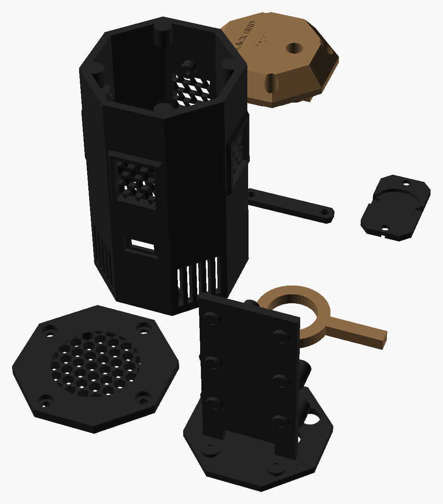

Granada reutilizável para o jogo: você puxa o pino, ela conta 3 segundos e estoura com sirene de 110 dB e estrobo branco de 4 LEDs de 1 W. Recarrega pelo USB-C e arma de novo recolocando o pino. Tem também o modo "mina", para usar com fio de tropeço. Medidas em milímetros.
Encoste um cartão de crédito/débito na tela e mova o controle até o retângulo ter exatamente o mesmo tamanho (85,6 × 54 mm).
px/mmPor que intermediário: a eletrônica é simples (uma placa que dorme, 2 MOSFETs que ligam a sirene e os LEDs, um elevador de tensão), mas é o primeiro projeto com corrente alta (≈ 2 A nos picos) e o corpo precisa aguentar ser jogado no chão.
| Ação | Resultado |
|---|---|
| Pino no lugar | O ímã na ponta do pino fecha o sensor magnético (reed). A granada fica armada e dormindo, gastando quase nada |
| Puxar o pino | Acorda, conta o tempo do modo e estoura: 2,5 s de sirene contínua + estrobo; depois a sirene pulsa até completar 6 s |
| Recolocar o pino durante a contagem | Cancela: não estoura e continua armada |
| Depois de estourar | Volta a dormir e espera o pino. Recolocou o pino: 1 piscada curta = armada de novo |
| Botão MODO, toque curto (pino no lugar) | Troca o modo e mostra com piscadas: 1 = 3 s · 2 = 5 s · 3 = MINA (0 s). Fica salvo |
| Botão MODO, segurar 2 s | Mostra a bateria: 1 a 4 piscadas longas (4 = cheia) |
| Modo MINA | Amarre um fio de pesca na argola e prenda a granada no chão ou numa árvore: quem tropeçar puxa o pino e ela estoura na hora |
| Ligar a chave com o pino fora | Não estoura (segurança). Ela só arma quando você colocar o pino |
Todas as peças impressas, nas cores de impressão (coyote e preto); cada peça sai de uma cor só. Arquivos em 3D/stl; quantidades, ferragens e configuração no 3D/LEIA-ME.txt.

| Componente | Medidas (mm) | Função |
|---|---|---|
| ESP32-C3 SuperMini (do kit do cronógrafo, 04) | 22,5 × 18 | Conta o tempo, liga a sirene e o estrobo e dorme entre um uso e outro |
| Sirene piezo 12 V 110 dB (com oscilador embutido) | Ø 42 × 26 (confira) | O "estouro". Precisa de 12 V: por isso o elevador |
| Módulo elevador MT3608 (step-up) | 36 × 17 | Transforma os 3,7 V da bateria em 12 V para a sirene |
| 4 LEDs de 1 W branco frio em estrela de 20 mm | Ø 20 | Estrobo. Cada um com resistor de 2,2 Ω 1 W |
| 2 MOSFETs IRLZ44N + 2 resistores 100 Ω + 2 resistores 10 kΩ, numa plaquinha perfurada de 20 × 18 | TO-220 | Ligam a sirene e os LEDs (a placa sozinha não aguenta essa corrente) |
| Reed switch 2 × 14 mm + ímã de neodímio 4 × 2 mm | 2 × 14 · Ø 4 × 2 | Sentem se o pino está no lugar |
| LiPo 802540 3,7 V 1000 mAh | 8 × 25 × 40 | Bateria (aguenta os picos de ≈ 2 A) |
| Carregador TP4056 USB-C com proteção (do kit do 04) | 28 × 17 | Carrega a LiPo pelo USB-C da face da frente |
| Botão de painel 7 mm (pulso) + chave gangorra mini KCD11 | furo 7 · rasgo 10 × 15 | MODO e liga/desliga |
| Resistores 100 kΩ (4) | — | Pull-ups do reed e do botão (funcionam com a placa dormindo) e divisor da bateria |
Peças impressas (pasta 3D) | — | corpo, base, topo, pino, chassi, 4 suportes de LED, 4 presilhas, 2 presilhas da LiPo |
Sem escala. O TP4056 fica ligado direto na bateria (carrega mesmo com a chave desligada); a chave corta a saída. Os MOSFETs ligam o GND da sirene e dos LEDs.
| De | Para | Observação |
|---|---|---|
| LiPo +/− | TP4056 B+/B− | Direto, sem chave (carrega desligada) |
| TP4056 OUT+ | Chave KCD11 → "BAT+" | Tudo o que segue usa o BAT+ depois da chave |
| TP4056 OUT− | GND comum | GND da placa, sources dos MOSFETs, reed e botão |
| BAT+ | C3 pino 5V | O regulador da placa faz os 3,3 V |
| GPIO2 | reed → GND · 100 kΩ → 3V3 | LOW = pino no lugar |
| GPIO3 | botão MODO → GND · 100 kΩ → 3V3 | LOW = apertado |
| GPIO4 | 100 Ω → gate de Q1 | Q1 liga o GND do MT3608 (sirene) |
| GPIO5 | 100 Ω → gate de Q2 | Q2 liga o GND dos 4 LEDs (estrobo) |
| GPIO1 | meio do divisor 100k/100k entre BAT+ e GND | Mede a bateria |
| MT3608 OUT+/OUT− | Sirene + / − | Antes, regule o trimpot do MT3608 para 12 V com o multímetro |
3D/LEIA-ME.txt. No pino, a impressora para na altura de 4,6 mm: coloque o ímã de 4 × 2 no bolso e continue.GRANADA/GRANADA.ino e veja: coloque o ímã encostado no reed (arma, 1 piscada), afaste (3 s depois o LED pisca). Depois ponha a sirene com o MT3608.Valores de out/2026, sem frete, só produtos novos (os links do Mercado Livre já abrem com o filtro "Novo"). Não achei os preços exatos desses itens nas buscas: os valores são estimativas de anúncios comuns; confira antes de comprar. Peças impressas não entram. "Kits do 04" = cronógrafo.
| Item | Onde | Fica para | Menor | Maior |
|---|---|---|---|---|
| Sirene piezo 12 V 110 dB (confira o diâmetro: até 42 mm) | Mercado Livre | — | R$ 15,00 | R$ 30,00 |
| Conjunto: kit 10 LEDs 1 W branco frio em estrela (usa 4) | Mercado Livre | reserva (uma 2ª granada) | R$ 15,00 | R$ 30,00 |
| Conjunto: kit 5 MT3608 (usa 1) | Mercado Livre | reserva | R$ 15,00 | R$ 25,00 |
| 2 MOSFETs IRLZ44N | Mercado Livre | 10, 14 | R$ 8,00 | R$ 16,00 |
| Conjunto: kit 10 reed switch (usa 1) | Mercado Livre | — | R$ 10,00 | R$ 20,00 |
| Conjunto: kit ímãs de neodímio 4 × 2 (usa 1) | Mercado Livre | — | R$ 10,00 | R$ 18,00 |
| LiPo 802540 3,7 V 1000 mAh | Mercado Livre | — | R$ 30,00 | R$ 45,00 |
| Conjunto: kit 10 botões de painel 7 mm (usa 1) | Mercado Livre | reserva | R$ 10,00 | R$ 18,00 |
| Conjunto: kit 10 chaves gangorra KCD11 (usa 1) | Mercado Livre | reserva | R$ 10,00 | R$ 18,00 |
| 4 resistores 2,2 Ω 1 W + perfurada pequena | Mercado Livre | — | R$ 5,00 | R$ 10,00 |
| ESP32-C3, TP4056, resistores 100 Ω / 10 kΩ / 100 kΩ | kits do 04 e kit de resistores | — | R$ 0,00 | R$ 0,00 |
| Total reaproveitando os kits do 04 | ≈ R$ 128 | ≈ R$ 230 | ||
| Total do zero (comprando também o kit 5 ESP32-C3 e o kit 10 TP4056) | ≈ R$ 242 | ≈ R$ 387 | ||
SIRENE_D e SIRENE_H no pecas.scad.